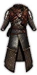
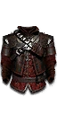
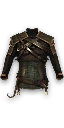
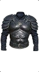
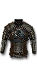

Armor
Witcher Gear
All stats displayed are for items at Grandmaster level.
Cat focuses on evasion, flanks, and injuries.
Set Bonus: For each set piece equipped, attacks have +10% flanking attack power and injury chance for 5 seconds after a dodge, and dodges have +10% stamina efficiency and graze damage reduction for 5 seconds after an attack.
Grandmaster: Injuries you inflict reduce enemy speed and damage by 5%.
Cat Armor720 Armor
30% Base Resist
-5% Stamina
-5% Speed
+25 Dodge Angle
+25% Movement Efficiency
- Cat Steel
+30% Flank Power
+15% Injury Chance
+15% Armor Piercing
+15% Critical Chance
+15% Stun Chance
-15% Attack Power
-25% Poise Damage
-15% Sign Intensity
- Cat Silver
+30% Flank Power
+15% Injury Chance
+15% Attack Speed
+15% Bleed Chance
+15% Adrenaline
-15% Attack Power
-25% Poise Damage
-15% Sign Intensity
Griffin focuses on signs, vigor, and resistances. It is now Heavy Armor.
Set Bonus: For each set piece equipped, 0.5% of the Ethereal damage you deal permanently lowers enemy force, frost, fire, shock, and mental resistances. Can break damage immunities, but not status.
Grandmaster: While inside a Yrden circle you have +10% increased time slow, +20% Vigor regeneration, and +20% Intensity for other Signs.
Griffin Armor1620 Armor
50% Base Resist
-15% Stamina
-17.5% Speed
+50% Vigor Regen
+10% Ethereal Resist
- Griffin Steel
+150 Ethereal Damage
+15% Sign Intensity
+15% Adrenaline
+15% Stamina (Defense)
-15% Armor Piercing
-15% Attack Speed
-15% Stamina (Offense)
- Griffin Silver
+100 Ethereal Damage
+25% Sign Intensity
+15% Stun Chance
+15% Yrden Intensity
-15% Armor Piercing
-15% Attack Speed
-15% Stamina (Offense)
Bear focuses on armor, parries, and poise.
Set Bonus: For each set piece equipped, perfect parries deal 10% more poise damage, poise-breaking an enemy restores 5 Stamina, and poise-break attacks deal 5% more damage.
Grandmaster: Each point of current poise reduces enemy armor piercing by 0.2% and damage taken through blocks by 0.3%. Each point of missing poise increases attack speed by 0.2% and poise damage by 0.3%. Poise does not regenerate unless blocking or standing still.
- 
Bear Armor 1800 Armor
60% Base Resist
-20% Stamina
-20% Speed
+25 Poise
+25% Injury Resist
- Bear Steel
+15% Armor Piercing
+50% Poise Damage
+15% Attack Power
+15% Stamina (Defense)
+30% Counter Damage
-15% Attack Speed
-15% Flank Power
-15% Stamina (Movement)
- Bear Silver
+15% Armor Piercing
+50% Poise Damage
+150 Shock Damage
+30% Damage Through Blocks
+15% Quen Intensity
-15% Attack Speed
-15% Flank Damage
-15% Stamina (Movement)
Wolf focuses on stamina, adrenaline, and bleeding.
Set Bonus: For each set piece equipped, applying bleeding generates 0.25 Adrenaline, and Adrenaline gained over 100 restores 1 Vitality and 0.1 Stamina.
Grandmaster: Maximum adrenaline is increased to 150. Bleed stacks reduce enemy force and frost resistance by 5%.
- 
Wolf Armor 1070 Armor
40% Base Resist
-7.5% Stamina
-12.5% Speed
+50% Adrenaline
+50% Bleed Resist
- Wolf Steel
+25% Stamina (Offense)
+15% Bleed Chance
+15% Attack Power
+15% Attack Speed
-25% Vigor Regen
-15% Armor Piercing
- Wolf Silver
+15% Stamina (Offense)
+15% Bleed Chance
+15% Frost Chance
+150 Frost Damage
+15% Aard Intensity
-25% Vigor Regen
-15% Armor Piercing
Viper focuses on oils, poison, and criticals. The swords have been expanded to 5-tiers like other sets.
Set Bonus: critical chance is increased by 0.25% per poison stack on the target, and Axii applies 1 poison stack on a successful cast.
Grandmaster: An additional oil can be applied, and potency loss from additional oils is reduced by 50%. Each oil applied increases bonus oil potency on critical hits by 25%.
- 
Viper Armor 1090 Armor
45% Base Resist
-15% Stamina
-7.5% Speed
+15 Vitality Regen
+50% Poison Resist
- Viper Steel
+250 Poison Damage
+15% Poison Chance
+15% Critical Chance
+30% Critical Damage
-15% Attack Power
-15% Armor Piercing
-15% Stamina (Defense)
- Viper Silver
+150 Poison Damage
+25% Poison Chance
+15% Attack Speed
+15% Axii Intensity
-15% Attack Power
-15% Armor Piercing
-15% Stamina (Defense)
Viper Schematic Locations:
Steel | Silver | |
|---|---|---|
Basic | White Orchard, loot in Amavet Fortress Ruins | White Orchard, loot in Cemetary |
Enhanced | Velen, when meeting Letho (Ghosts of the Past) | Velen, chest in Grayrocks Mine (Contract: Missing Brother) |
Superior | Novigrad, chest in Maximilian Borsodi's Vault (Open Sesame!) | Novigrad, guarded treasure in northeast of Heddel |
Mastercrafted | Skellige, treasure hunt on Snidhall Isle (Unlucky's Treasure) | Skellige, treasure hunt on Faroe Isle (Hidden in the Depths) |
Grandmaster | Toussaint, chest in Moreau's Lab (Turn and Face the Strange) | Toussaint, chest next to Axii PoP in Albertus Grotto (Father Knows Worst) |
Manticore focuses on toxicity, ranged damage, and critical effects. A crossbow has been added to the set. The schematic is found alongside the gloves.
Set Bonus: For each set piece equipped, +6% ranged damage (including bombs) and +4% attack power per status effect on the target.
Grandmaster: Effects that scale with Toxicity percent scale with flat Toxicity instead. +0.2% attack power and +0.3 Vitality regeneration per point of active Toxicity.
Manticore Armor600 Armor
25% Base Resist
-4% Stamina
-4% Speed
+50 Toxicity
+75% Burning Resist
- Manticore Steel
+15% Burn Chance
+15% Poison Chance
+15% Bleed Chance
+15% Stamina (Offense)
+15% Attack Speed
-15% Attack Power
-25% Counter Damage
-15% Stamina (Defense)
- Manticore Silver
+25% Burn Chance
+150 Fire Damage
+15% Armor Piercing
+15% Igni Intensity
-15% Attack Power
-25% Counter Damage
-15% Stamina (Defense)
Forgotten Wolf tries to keep the Wolf Set's focus on Adrenaline while expanding it to encompass a more well-rounded playstyle.
Set Bonus: For each set piece equipped: 0.25% of Adrenaline gained also restores Vigor and while at full Vigor, 1000% of Vigor regeneration is added to Stamina regeneration.
Grandmaster: Casting Signs generates 10 Adrenaline. Potions imbibed with no other potions active have their effects increased by 50%. Decoction passive effects are increased by 100%.
- 
Forgotten Wolf Armor 1200 Armor
45% Base Resist
-9% Stamina
-9% Speed
+50% Durability
+50 Max Toxicity
- Forgotten Wolf Steel Sword
+10% Armor Piercing
+25% Durability
+25% Poise Damage
+15% Vigor Regen
-10% Attack Speed
-05% Critical Chance
- Forgotten Wolf Silver Sword
+10% Armor Piercing
+25% Durability
+15% Attack Power
+15% Adrenaline Gain
-10% Attack Speed
-05% Critical Chance
- 
Improved Kaer Morhen Armor 980 Armor
35% Base Resist
-7.5% Stamina
-10% Speed
+10 Vitality Regen
+15% Injury Resist
- Improved Kaer Morhen Steel
10% Bleed Chance
10% Armor Piercing
15% Efficiency (Defense)
-15% Critical Damage
- Improved Kaer Morhen Silver
10% Bleed Chance
10% Adrenaline Gain
15% Efficiency (Defense)
-15% Poise Damage